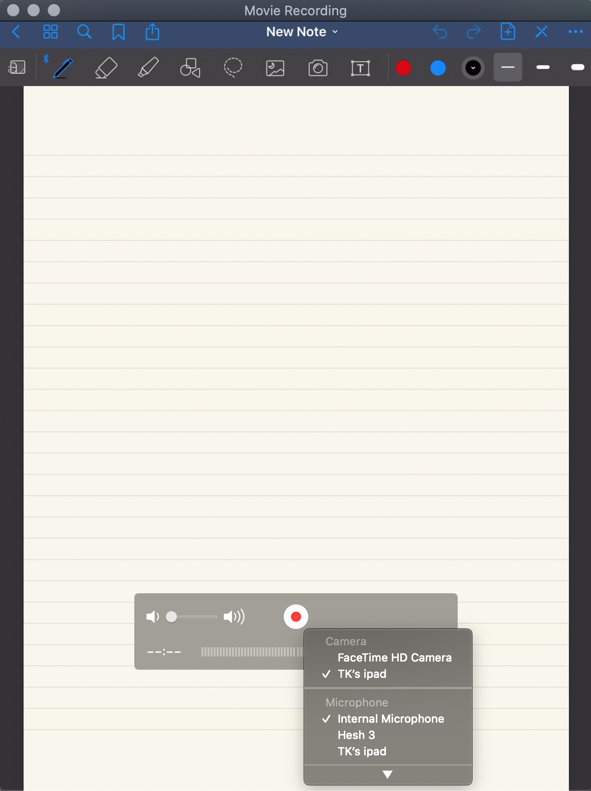

Google meetでiPad上のスクリーンを共有する方法
Google meetを使って、ミーティングを行う際に音声・ビデオはmacを使いたいが、リアルタイムでiPadの画面（ノート上で実際に計算するなど）の共有も同時に行いたい場合がある。 この場合、以下の方法がある。- iPad側で直接Google Meetに参加する
- iPadの画面をQuickTime Playerで録画状態にすることで、共有する
QuickTime Playerでは、USBで接続中のiPadをカメラとして使用することができる。 mac側でQuickTime Playerを起動し、Fileから"New Movie Recording"をクリックする。

録画ボタンの隣のタブから、iPadを選択することでQuickTime Playerでの録画準備状態になる。 この状態で、Google MeetでQuickTime Playerのウインドウ共有を行えば、リアルタイムでのiPad画面の共有が可能である。